Your payments, aligned with your calendar.
Plan bills and subscriptions, set reminders, and keep a clean monthly overview. Your data stays on device.
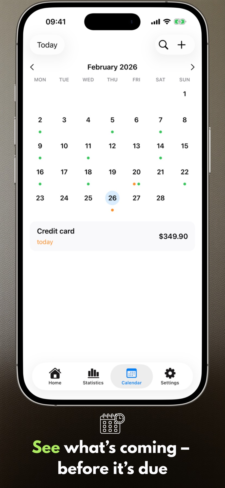
What's new in 2.3.1
- Widgets work more reliably.
- The payment list displays correctly on Mac.
App screens
Six key screens on iPhone and iPad that show the pace of planning with Payment Calendar.
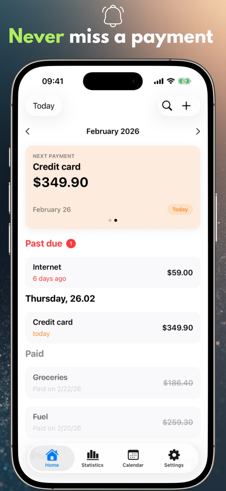
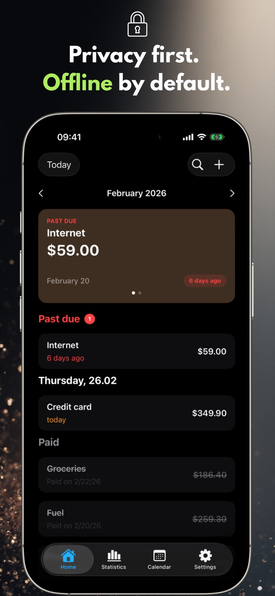
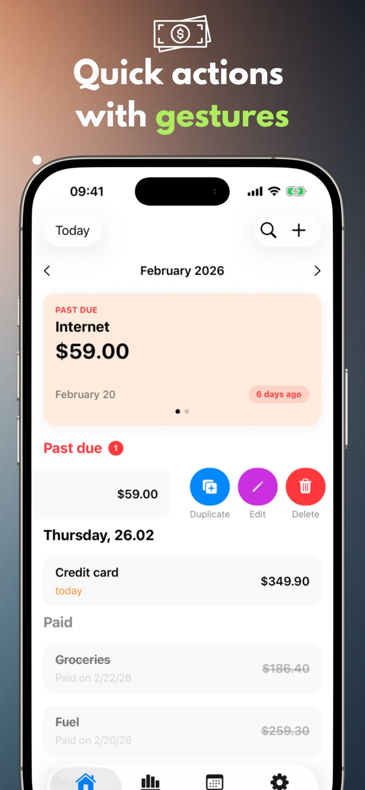
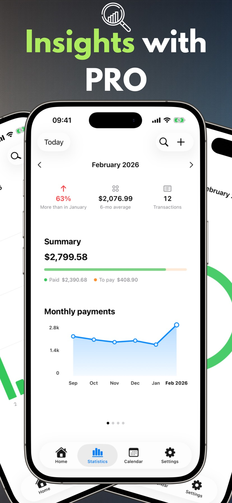
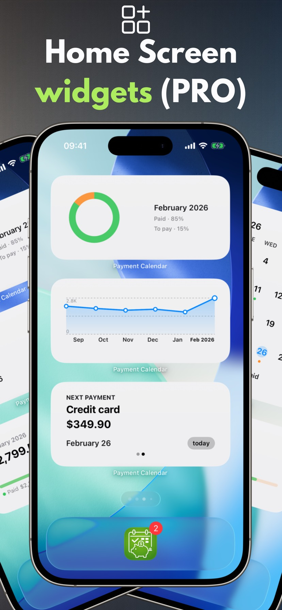
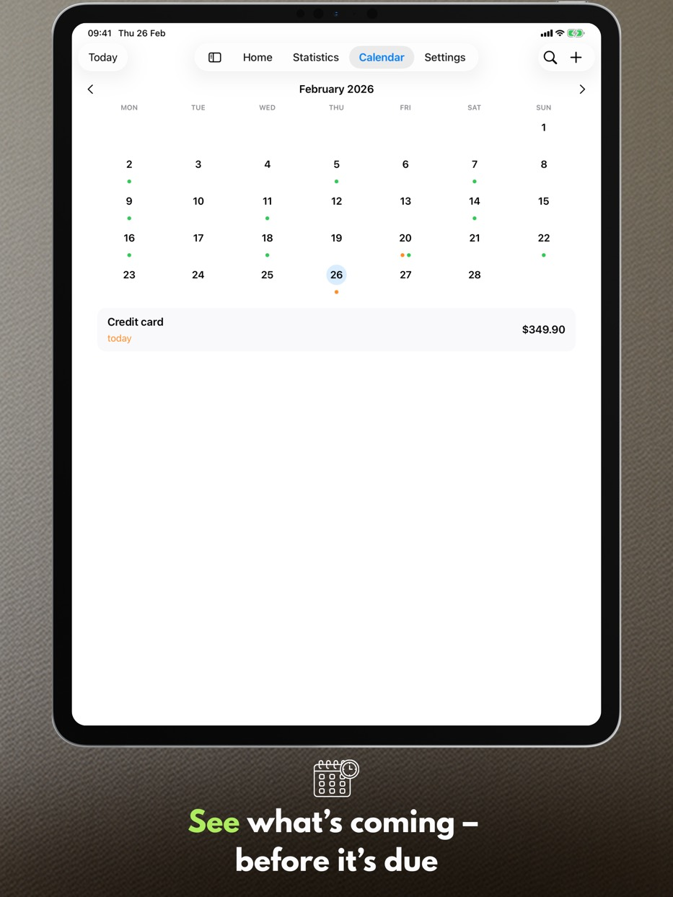
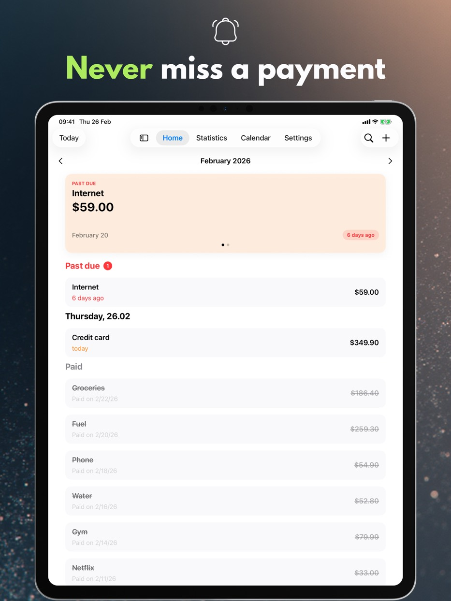
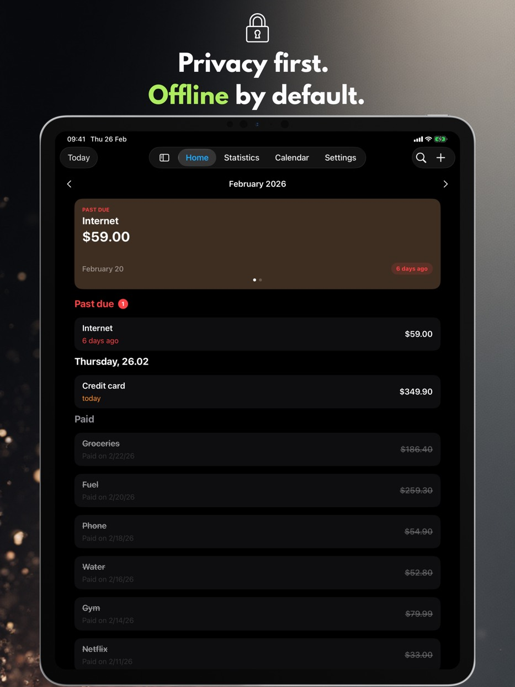
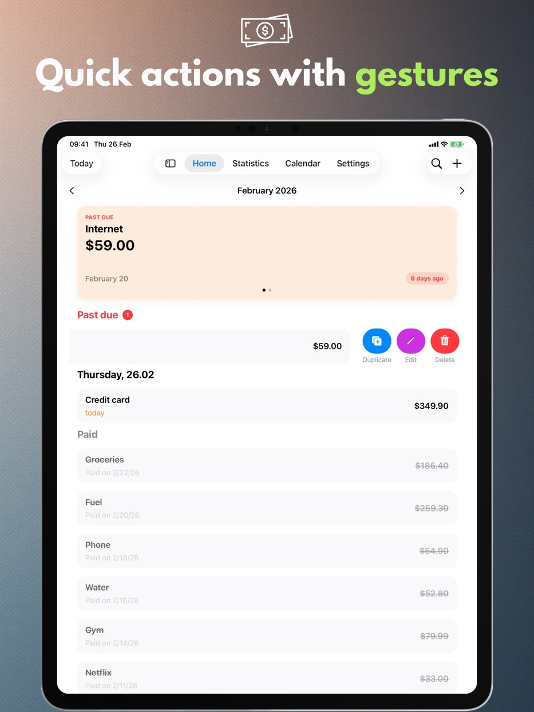
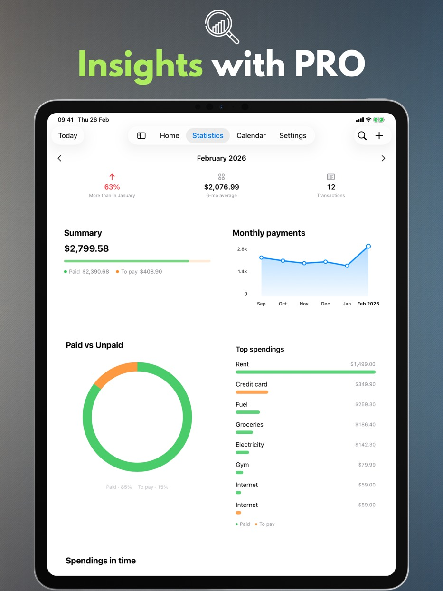
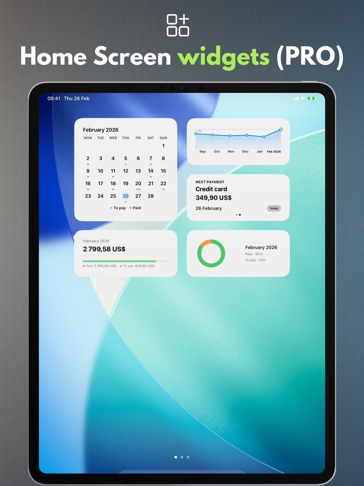
App features
Everything below works free of charge and without an account: a clear month view, quick payment entry and reminders that let you plan your spending calmly.
Payment calendar
See upcoming due dates and your payment list in one place.
Reminders
Get notified on the due day or a few days earlier.
Gestures and quick actions
Mark as paid, edit, or duplicate with a single swipe.
Search
Find payments by name, amount, or notes.
Personal settings
Currency, week start, theme, and a layout that fits you.
iPad support
Windowing and Split View, plus keyboard and keyboard shortcuts.
Trash
Deleted payments wait in the Trash for 30 days — you can restore them.
Accessibility
The app scales with your system text size, respects Reduce Motion and never shows payment status by colour alone.
Privacy
Your data stays on device.
Payment Calendar does not require an account and does not track your activity. iCloud sync is optional and disabled by default.
No ads, no analytics
We do not use third-party analytics or advertising SDKs.
Data control
Delete your data anytime in the app or by removing it.
PRO features
A paid add-on: statistics, widgets, recurring payments, sync and export. Choose a monthly or yearly subscription, or a one-time lifetime purchase.
Statistics and trends
Monthly summaries plus a 6-month trend view.
Widgets
Four Home Screen widgets: next payment, monthly summary, trend and month grid.
Recurring payments
Create repeating payments automatically.
iCloud Sync
Keep data in sync across your devices when enabled.
CSV/PDF export
Share summaries or archive your data.
Available languages
Payment Calendar supports Polish, English, Spanish, German, French, Italian, Ukrainian, Swedish, Simplified Chinese, Japanese, and Portuguese (Brazil).
Frequently asked questions (FAQ)
Find quick answers to the most common questions about Payment Calendar.
Before you download
How can I avoid forgetting a bill payment?
Payment Calendar shows all your upcoming payments in a monthly view and sends reminders ahead of the due date, so you always know in advance what needs to be paid and when.
How can I keep track of subscriptions so I don't pay for ones I don't need?
Add your subscriptions as recurring payments (a PRO feature) — the app automatically reminds you before each renewal, making it easier to spot and cancel the ones you no longer use.
Is there an app that works like a calendar, but for bills and payments?
Yes — that's exactly the idea behind Payment Calendar. The monthly view shows payments instead of events, marking what's already paid and what's still due.
How can I manage payments without creating an account?
Payment Calendar doesn't require sign-up or sign-in — install the app and start adding payments right away. Your data stays on your device unless you turn on optional iCloud sync yourself.
How is Payment Calendar different from a regular phone calendar?
A standard calendar shows events, not payments — it has no paid/unpaid status, no reminders built around bills, and no view of your spending. Payment Calendar is built specifically for payments: with amounts, currencies, recurrence, and statistics on what you actually spend each month.
Basics
What is the Payment Calendar app?
Payment Calendar is an app for iPhone and iPad (iOS/iPadOS) for tracking bills and upcoming payments in a calendar format. It helps you quickly see what is due and mark payments as paid.
Does the app work offline?
Yes. The app works offline and does not require an account or an internet connection. Data is stored locally on your device. Optional iCloud sync (in the PRO version) lets you access data across multiple Apple devices.
Which devices does Payment Calendar support?
The app runs on iPhone and iPad with iOS/iPadOS 18.0 or later. You can also install it on a Mac with Apple silicon, where it runs as an iPad app (“Designed for iPad”) rather than a separate macOS version.
Privacy & data
Is my financial data safe?
Yes. Payment Calendar does not collect user data and does not require sign-in. Your data stays on your device, and optional iCloud sync (in the PRO version) runs within the Apple ecosystem.
Does Payment Calendar connect to my bank account?
No. Payment Calendar doesn't connect to your bank or pull transactions automatically — you add payments manually. That's a deliberate choice: the app has been built around privacy from day one and doesn't need access to your bank account to work.
Features
Can I add recurring payments and subscriptions?
Yes. You can add recurring payments such as subscriptions and monthly bills. This feature is available in the PRO version.
Does the app send reminders about upcoming payments?
Yes. You can set reminders so you never miss a payment.
Which currencies does Payment Calendar support?
The app supports 22 currencies, including the US dollar, euro, pound sterling, Swiss franc, Czech, Swedish, Norwegian and Danish crowns, forint, hryvnia, yen, yuan, real, as well as the Colombian peso, Mongolian tögrög, Mexican peso, Chilean peso and New Zealand dollar. Formatting (symbols, separators, rounding) adapts automatically to your device region.
Can I export my payments?
Yes, in the PRO version. You can export your data to a CSV or PDF file, for example for a report or for your own records.
Can I correct the actual date I paid?
Yes. The edit form for a paid payment has a "Paid on" field where you can set the actual payment date. Statistics still group payments by due date, not by the date you paid.
Is there a Home Screen widget?
Yes, in the PRO version. There are four Home Screen widgets to choose from: next payment, monthly summary, spending trend and month grid — all without opening the app.
I deleted a payment by accident — can I get it back?
Yes. Deleted payments go to the Trash and stay there for 30 days. You will find the Trash in Settings, and restoring an entry takes a single tap.
Is Payment Calendar a household budgeting app?
No. It is a bill calendar that helps you track upcoming and paid payments. It does not manage income, account balances, or budgeting.
Sync & languages
Does data sync between my iPhone and iPad?
Yes, if you turn on optional iCloud sync (a PRO feature) — your payments then become available on every Apple device signed in with the same iCloud account. Without it, your data stays local to a single device.
What languages is the app available in?
Payment Calendar is available in 11 languages: Polish, English, Spanish, German, French, Italian, Ukrainian, Swedish, Simplified Chinese, Japanese, and Portuguese (Brazil).
Platforms
Is Payment Calendar available for Android?
No. Payment Calendar is an iPhone and iPad app (iOS/iPadOS); on Apple silicon Macs it runs in “Designed for iPad” mode. There is no Android version.
Is there an Apple Watch version?
Not yet, but watchOS support is on the roadmap.
Pricing & PRO
Can I use the app without a paid subscription?
Yes. Core features are available for free. PRO features, such as recurring payments and iCloud sync, require a subscription or a one-time purchase.
How much does PRO cost, and can I cancel my subscription?
Pricing varies by region and is shown in the app and on the App Store. You can choose a monthly or yearly subscription, or a one-time lifetime purchase. You manage and cancel your subscription in your Apple ID settings, just like any other App Store subscription.
Support
I'm missing a currency, or I have an idea for a new feature — what should I do?
Email payment_calendar@icloud.com. I read and reply to every message personally — user requests and ideas genuinely shape future updates.
Ready for calmer payment planning?
Payment Calendar keeps every due date in sight.